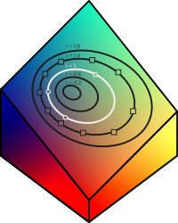

Node Reference
In the following, we will use the notation <InputType, OutputType> to show what the input and outputs of a node are. None is used where a node does not have inputs or outputs.
You can only connect top nodes <A, B> and <C, D> if B and C are the
same, for example, you can link <None, Color> to
Input Nodes
Constant Color <None, Color>
Takes the colors selected in the nodes properties, and outputs them.
| Property | Description |
|---|---|
| Colors | The colors that will become the outputs. |

Random Color <None, Color>
Generates random colors, and outputs them.
| Property | Description |
|---|---|
| Count | The number of colors to generate. |

Mixing Nodes
Mix2 <Color, Color>
Takes two colors as input, and mix them together using linear interpolation.
| Property | Description |
|---|---|
| Blend Factor | The blend factor. A value of 0 gives the first color, a value of 1 gives the second, a value of 0.5 gives the color halfway between the two. |
| Mix Mode | The color space in which to do the interpolation. |

Random Mix 3 <Color, Color>
Randomly mixes its first three inputs to produce the outputs.
| Property | Description |
|---|---|
| Mix Mode | The color space in which to do the mixing. |
| Grey Control | A parameter that determines the effect of one of the three nodes (randomly chosen). When it is 0, one of the inputs have no effect, when it is 1, all three nodes have equal potential effect. When using primary colors as inputs, having low values of this parameter prevents too much greyness in the output colors. |

HSL Channel Nodes
Set Hue <Color, Color>, Set Luminance <Color, Color>, Set Saturation <Color, Color>**
These nodes work all the same, except that they operate on different channels in the HSL space.
| Property | Description |
|---|---|
| Multi | When selected, a set of Count random values is generated, where each set is applied to each color in the inputs, resulting in Count x Input# output colors in total. When not selected, only one value is generated for each input color resulting in Input# output colors in total. |
| Count | The number of random values to create when multi is true. Count only has an effect if multi is true. |
| Hue, Luminance, Saturation | The random values generated are centered around this value. |
| Range | The range of the random values generated. Use a range of 0 to set values non-randomly. |


Example
If Multi is true, Count is 2, Hue is 0.3, Range is 0.2, and the node has 3 inputs, then there will be 6 outputs (two for each input color). The hues will vary from 0.2 to 0.4, and the colors 0, 2, and 4 will have the same hue, and colors 1, 3, and 5 will have the same hue. The other properties will be taken from the input colors, so output colors 0 and 1 will have the same luminance and saturation as input color 0, output colors 2 and 3 will have the same luminance and saturation as input color 1, and so on.

Example
If Multi is false, Count is 2, Hue is 0.3, Range is 0.2, and the node has 3 inputs, there will be 3 outputs. The hues will vary from 0.2 to 0.4, but this time, they may all be different. The other properties will be taken from the three input colors. In this case, count has no effect.

Example
If multi is false, Count is 2, Hue is 0.3, Range is 0, and the node has 3 inputs, there will be 3 outputs, identical to the input colors except that their hues will be set to 0.3.

Offset Hue <Color, Color>, Offset Luminance <Color, Color>, Offset Saturation <Color, Color>
These work exactly the same as the previous three nodes, except that instead of setting channel values, they offset them.


Channel Inversion Nodes
Invert Color <Color, Color>
Inverts all three RGB channels of each of the inputs.

Invert Luminance <Color, Color>
Inverts the luminance channel of each of the inputs.

Invert Saturation <Color, Color>
Inverts the saturation channel of each of the inputs.

Gradient Nodes
Gradient <Color, Gradient>, HSL Gradient <Color, GradientHSL>, LAB Gradient <Color, GradientLAB>
These two nodes create gradients from the input colors, placed evenly in order. Gradient uses RGB interpolation, HSL Gradient uses HSL interpolation, and LAB Gradient uses LAB interpolation.
A gradient node must always be connected to a sample gradient node of the same type.
Sample Gradient <Gradient, Color>, Sample HSL Gradient <GradientHSL, Color>, Sample LAB Gradient <GradientLAB, Color> These nodes work the same – they sample colors from a gradient – except that they operate on different inputs.
| Property | Description |
|---|---|
| Count | The number of colors to sample from the gradient. |
| Selection Mode | How output colors are selected from the gradient. Even selects the colors evenly in order. Random selects the colors randomly (uniformly distributed), and Golden Ratio gives colors with successive color’s ~0.618 apart (wrapped). |


Selection Nodes
Combine <Color, Color>
This node simply outputs all the inputs. This is useful to get the colors of several nodes into one node.

Take <Color, Color>
This node takes the first count colors from the inputs.
| Property | Description |
|---|---|
| Count | The number of colors to select. |

Take At Indices <Color, Color>
This node takes the colors of the inputs at the indices specified in the indices input. This is most useful to select colors from a single node.
| Property | Description |
|---|---|
| Indices | The indices of the colors to select. |

Take Random <Color, Color>
This select random colors from the inputs.
| Property | Description |
|---|---|
| Count | The number of colors to select. |

Other Nodes
Affine Circle <Color, Color>
This node creates a series of ellipse in the RGB color space. The three colors you give determine a plane; all the ellipses are "concentric" in this plane around the triangles centroid. The radius determines which ellipse is used to sample the colors from. If the radius is 1, the ellipse goes through the provided colors. A radius of zero degenerates to the centroid of the triangle.
| Property | Description |
|---|---|
| Color1, Color2, Color3 | The colors that define the triangle. |
| Radius | The radius of the circle. A radius of 1 corresponds to an ellipse that runs through the colors. If the radius is 0, all the output colors will be the average of the three colors. |
| Count | The number of colors to generate. |